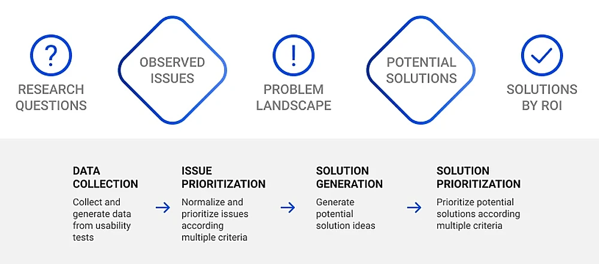

A structured approach to turning usability testing observations into prioritized product improvements.

View full imageIntroduction
Usability testing and UX research are critical not only for creating better user experiences, but also for supporting business success. In competitive digital environments, understanding how users interact with a product can directly impact conversion, retention, support costs and customer satisfaction.
The hard part is not only running the tests. It is collecting, sorting and analyzing the data in a way that helps the team decide what to do next.
The Double Diamond model
The Double Diamond framework is useful because it separates divergent and convergent thinking. Adapted to usability testing, it can become a four-step process: data collection, issue prioritization, solution generation and solution prioritization.
This structure helps teams avoid jumping from observation directly to solution without understanding patterns or impact.
Data collection
In the first phase, the team explores and discovers usability issues. Participants complete tasks while researchers observe behavior, confusion, hesitation, workarounds and points of failure.
Issues can include navigation problems, unclear labels, misunderstood language, broken expectations, slow responses or missing guidance. The goal is to capture as many relevant issues as possible before narrowing the focus.
Issue prioritization
After collecting issues, teams need to decide what matters most. Prioritization can consider task criticality, frequency, impact and severity.
A problem that blocks checkout, payment or onboarding should usually receive more attention than a minor visual inconsistency. Data helps the team focus effort where it can produce the highest value.
Solution generation
Once the priority issues are clear, the team can generate possible solutions. This should be a divergent phase, encouraging designers, developers and product managers to explore multiple options before choosing one.
Some issues have obvious fixes. Others require experimentation, alternative flows, clearer copy, new interface patterns or deeper product changes.
Solution prioritization
Solutions also need to be prioritized. A good solution may still be too complex, too expensive or too risky for the current moment. Comparing effectiveness, complexity and potential ROI helps the team decide what to implement first.
This step turns research into an actionable product plan.
The role of generative AI
Generative AI can assist with clustering observations, detecting patterns, summarizing feedback, generating possible solutions and estimating the effort-to-impact relationship of improvements.
AI should not replace research judgment, but it can reduce manual effort and help teams move from raw data to structured insights faster.
Conclusion
Usability testing is a strategic business investment. It helps uncover issues, improve user satisfaction, reduce support costs and guide product development.
The process can be intense, but a structured methodology makes the data easier to manage and the decisions easier to explain.
takeaway